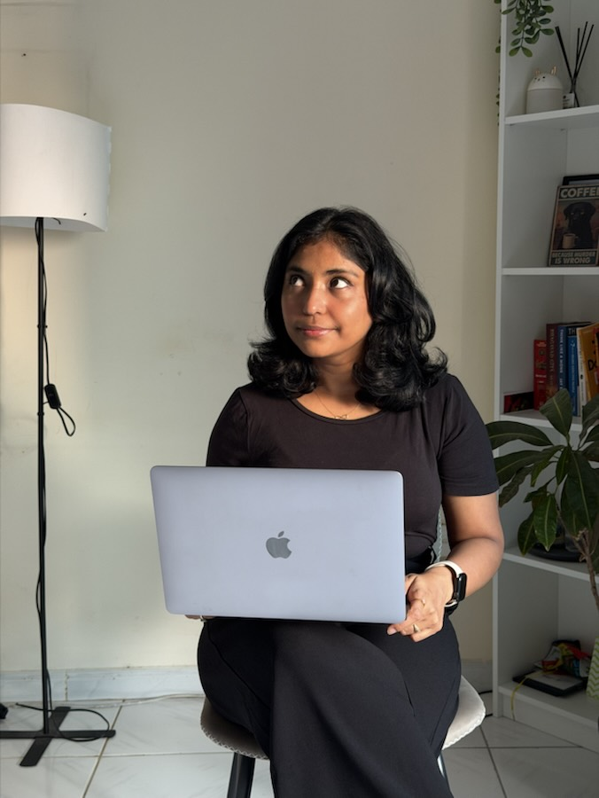
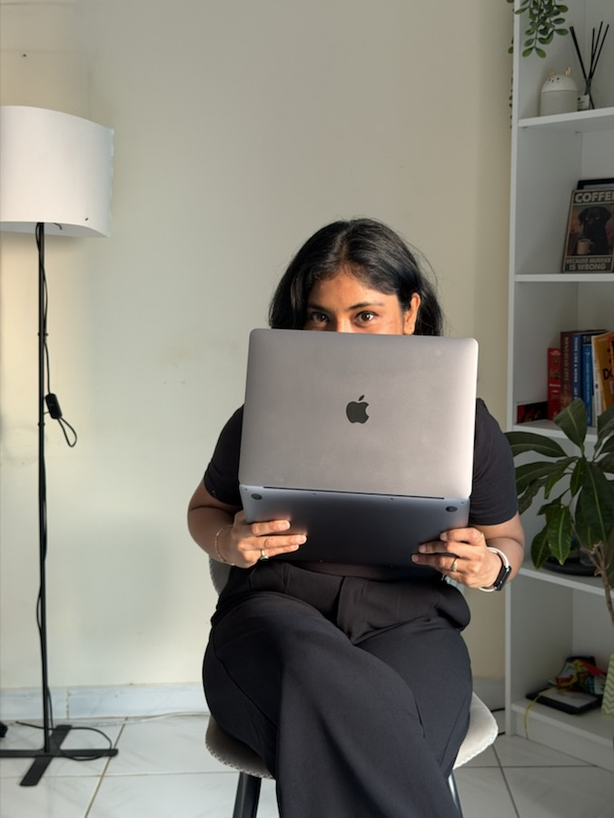
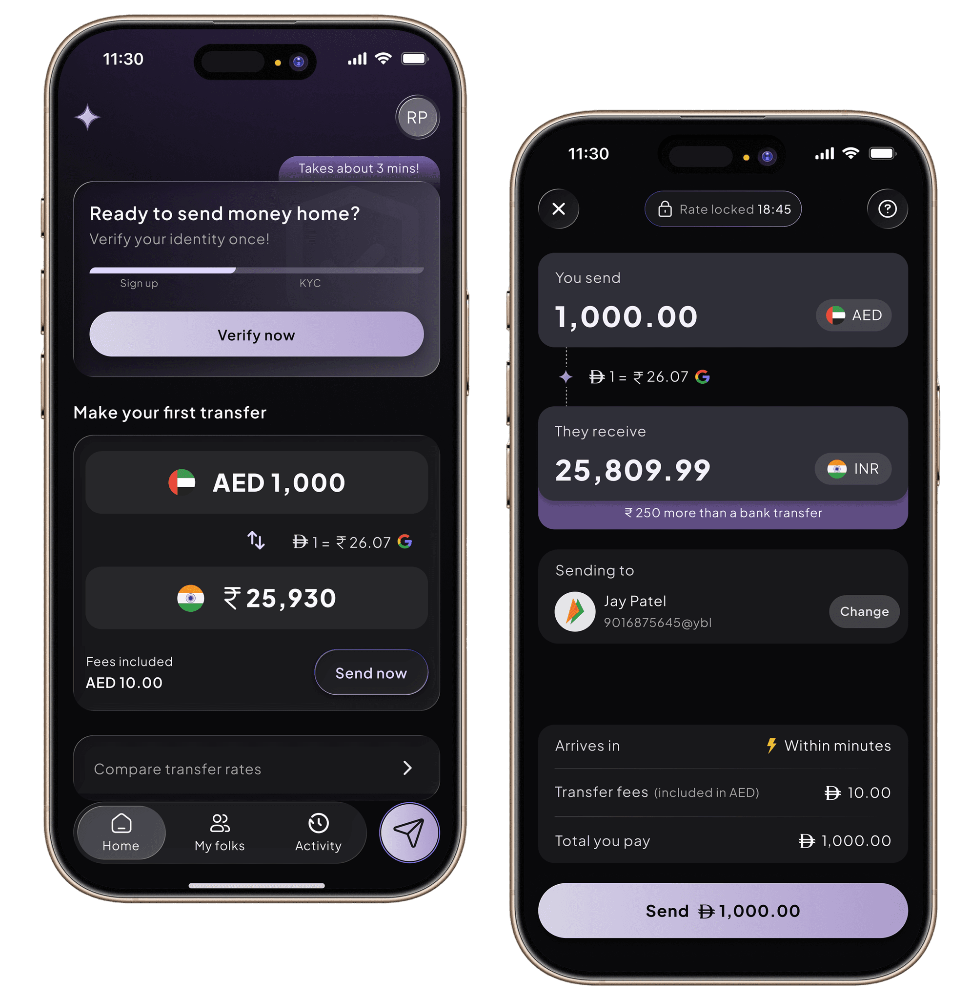
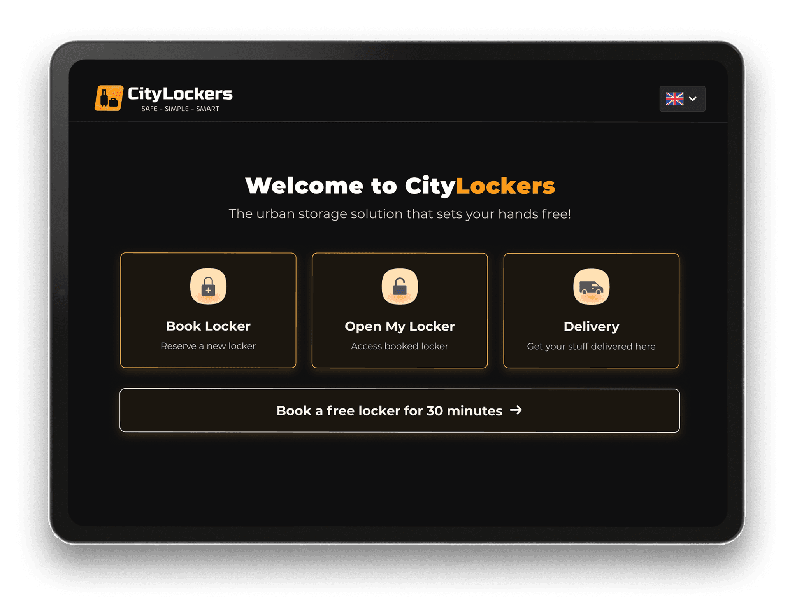
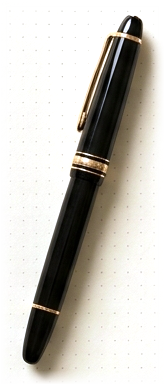
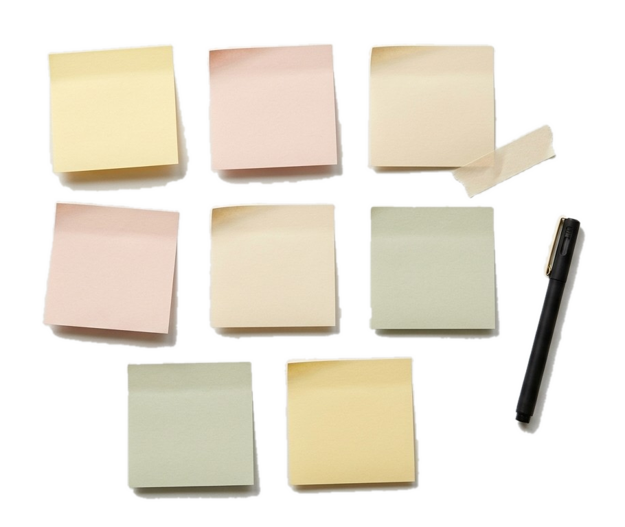
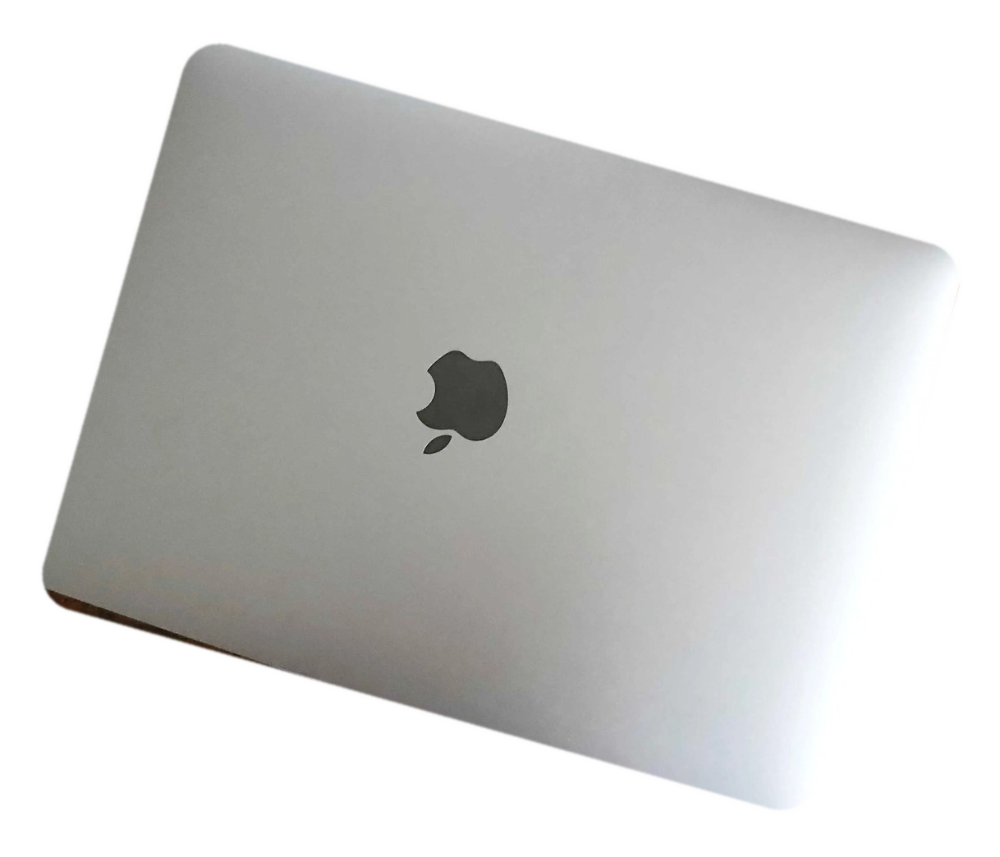
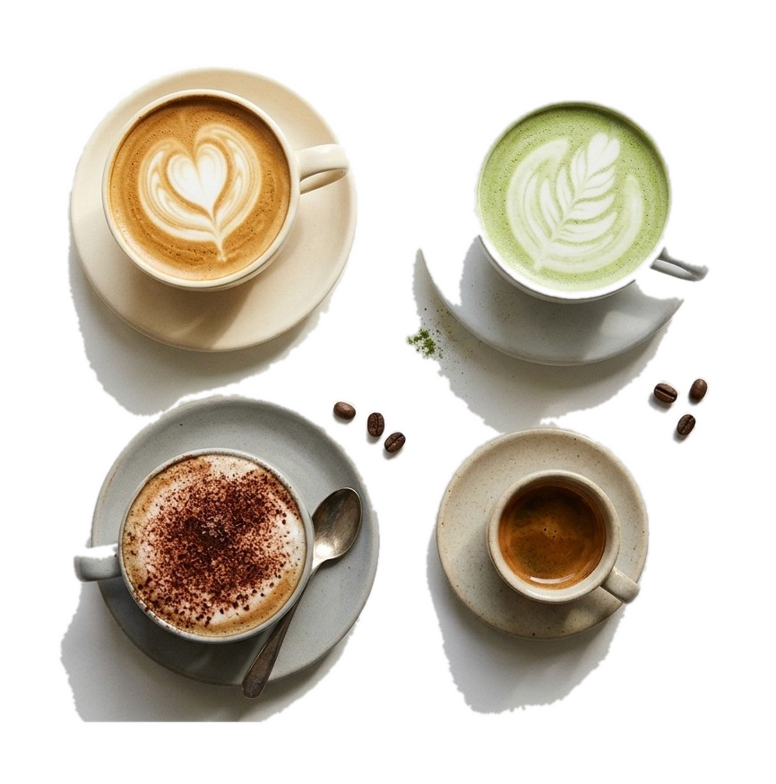

Research
Claude and ChatGPT turn messy notes and feedback into clear gaps and open questions.
- Claude
- ChatGPT
“AI native product designer”
“messy problems → clear direction”
“ex-dentist, now designing for trust”
“I think in systems”
“probably claudemaxxing now”
“fintech · health-tech · e-commerce”






Fintech, travel tech and B2B commerce. Research-led, shipped with small teams, written up in plain words.

A money transfer app helping UAE expats send money to India without hidden fees, silent holds or heavy signup paperwork.

A bag storage kiosk for Dubai tourists who want to explore the city hands-free. 2,000+ bookings, under 4 minutes each.

A platform letting online sellers source, manage and sell products globally without holding inventory. Connect a store, import products, start selling.
Hover to peek, click to read more.

→ alerts above the fold?
→ design the empty state first
test w/ 5 users ✓





Claude and ChatGPT turn messy notes and feedback into clear gaps and open questions.
PRDs live in Notion, tightened with Claude Code, so the team and AI agents share one brief.
Wireframes in minutes, so I try more directions and test ideas, not pixels.
No photoshoot needed: images and video made with Flow and Gemini, upscaled in Magnific.
Figma Agents handle variations; Claude turns usability feedback into a clear fix list.
A design-system.md keeps AI-built code on-brand. This portfolio was built that way.
The biggest change isn't speed. It's momentum: less time stuck at the start, more time refining.
Press play on the wheel. It's on my repeat list while I design.

Would love to talk about projects, growth & anything design. Pick a time that works for you, it's a relaxed 30-minute chat.
or email me at rajvi.patel60@gmail.com